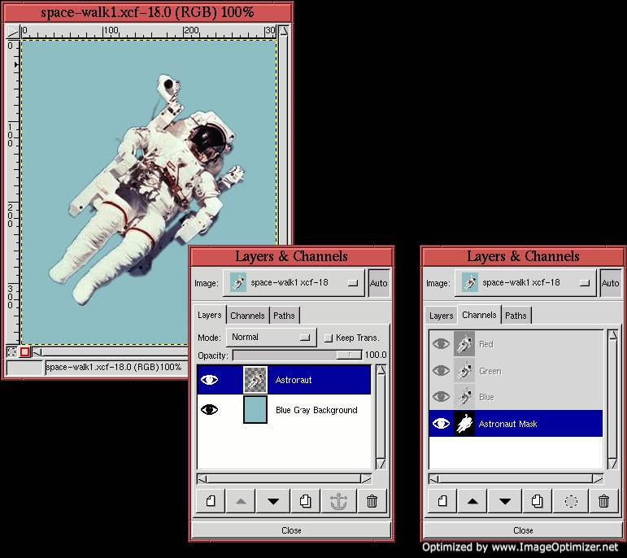

To illustrate some of the techniques discussed in this chapter, let's
apply them to a project using the image shown in
Figure 8.23(a).
This project uses a drop shadow and a punchout to create a composition
with our astronaut. The goal is to create the effect that he has
extracted himself from the 2D plane and is wandering off on his own.
To start, the selected astronaut is placed over a blue-gray layer. The
result of this is shown in Figure 8.24(a),
|  |
The most important element of the project is the outline of the astronaut because this is used to create both the shadow and the punchout effects. Thus, the next step is to save the outline as a channel mask. This is done by making the Astronaut layer active, applying the Alpha to Selection function found in the Layers menu, and then using Save to Channel from the Image:Select menu. This creates the channel mask shown in Figure 8.24(c). After the save-to-channel operation, it is important to cancel the selection by typing C-S-a in the image window.
The punchout is made first. This is begun by copying the astronaut
mask and pasting it into a new layer. This new layer, labeled Punchout,
is positioned between the Blue Gray Background layer and the Astronaut
layer as shown in Figure 8.25(a).
All that remains to finish the punchout effect is to blur the image in
the Punchout layer and to offset it.
Figure 8.26(a)
Before moving to the next stage of the project, let's give the
punchout a bit more pizzazz by inserting an interesting image pattern.
To do this, the Punchout layer is duplicated by first clicking on its
thumbnail in the Layers dialog, and then clicking on the Duplicate
Layer button. This creates a layer called Punchout Copy just above
the original. The image part of the Punchout layer is made active by
clicking on its thumbnail. This layer is now filled with the pink
marble pattern from the Pattern Selection dialog (see
Figure 8.27(c)). This is done using the Bucket Fill tool, where the fill type is set to Pattern Fill and the
Threshold is set to 255. Finally, the Mode menu for the Punchout Copy
layer is set to Multiply, as shown in
Figure 8.27(b).
The final step of this project is to rotate the astronaut, reposition him, and give him a drop shadow. To do this, he is first made visible by clicking on the Eye icon of the Astronaut layer in the Layers dialog. The rest is detailed in the following steps: